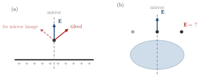

Advanced Quantum Materials 2027 · All lectures · Lecture notes
Session 2. Symmetries, Tight-Binding Band Structure Theory, and Effective Models
2.1 Motivation and recap
Let us recall the single-particle part of the Hamiltonian (1.5) of Session 1, written in second-quantized, tight-binding form,
\[H = \sum_{ij} t_{ij}\, c_i^\dagger c_j,\]
where \(t_{ij}\) are the hopping matrix elements between sites \(i\) and \(j\). In this language, to solve a quantum material means to diagonalize this Hamiltonian, which is to find the unitary transformation that brings it into the diagonal form
\[H = \sum_n \epsilon_n\, \Psi_n^\dagger \Psi_n, \qquad \Psi_n^\dagger = \sum_i a_{n,i}\, c_i^\dagger.\]
Symmetries allow us to find this diagonal form, or at least strong qualitative and quantitative properties of it, without doing the diagonalization explicitly. This is the motivation for everything in this session. We will use symmetry not to classify order, but to simplify how we solve a quantum many-body problem.
2.2 Simplifying problems with symmetry in simple examples
We have all used this method before, also outside quantum mechanics. Let us take an infinite plane with a uniform positive charge, and let us ask in which direction the electric field points at some position away from the plane. It can point straight out, or it can be tilted by some angle. We can apply a mirror symmetry that exchanges left and right. The charge distribution does not change under this reflection, so the true field must also map to itself under the same reflection. A tilted field does not pass this test, since its mirror image is tilted in the other direction, while a field that points straight out does pass it. Since the electric field at that point is unique, symmetry alone removes every answer except the one perpendicular to the plane, and we never have to compute the integral from Coulomb’s law.
The same argument also works for a less simple shape. Let us replace the infinite plane by an ellipse with a uniform charge, which is an egg-shaped charge distribution. We ask the same question about the field at some point on its mirror axis. Mirror symmetry again gives the answer without tilt, this time with the reflection axis of the ellipse, and again without any explicit integration. Note that this only works on the mirror axis. At a point away from it the reflection maps the point to a different point, and symmetry alone does not fix the direction there. Schematic 2.2 draws both cases.

A point sits on the mirror axis of the egg-shaped charge. Which direction can the electric field have there?
Show the answers
- A. ✗ False
This is false. Take two equal charges at \((0,\pm d)\) and a point \((x,0)\) on the axis. The components along \(y\) cancel, and the field points along \(x\) only.
- B. ✓ True
This is true. A component perpendicular to the axis is mapped by the mirror to the opposite component. The point lies on the axis, so the two are the field at the same point, and this component has to vanish.
- C. ✗ False
This is false. The mirror symmetry belongs to the whole charge and does not need a plane. The two point charges above are not a plane, and still the field on the axis is along the axis.
Only the components that the mirror leaves unchanged can survive on the axis.
Mirrors are only the simplest case. A circle stays the same under any rotation. A square stays the same only under rotations by \(90^\circ\), \(180^\circ\), and \(270^\circ\), and a shape with less symmetry may stay the same only under a single mirror. Quantum systems can have much richer symmetries, which are also much less obvious than these, and in the following we turn this richer structure into a systematic tool.
How many rotations, counting the identity, leave a square unchanged?
Show the answers
- A. ✗ False
This is false. A rotation by \(90^\circ\) maps every corner of the square to the next corner, so the square looks the same. We have at least \(0^\circ\), \(90^\circ\), \(180^\circ\) and \(270^\circ\).
- B. ✓ True
This is true. The rotations by \(0^\circ\), \(90^\circ\), \(180^\circ\) and \(270^\circ\) map the square to itself, and any other angle does not.
- C. ✗ False
This is false. A rotation by \(45^\circ\) moves a corner to the middle of an edge, so the square becomes a diamond. The number \(8\) counts the rotations and the four mirrors together.
Counting the mirrors too, the square has eight symmetry operations, and four of them are rotations.
- In Section 2.3 the mirror argument becomes a symmetry operator that commutes with the Hamiltonian.
- In Section 3.11b a symmetry does more than simplify, since time reversal protects the helical edge of a quantum spin Hall insulator.
- Section 5.11 classifies the pairing of a superconductor by its symmetry, with the same kind of argument.